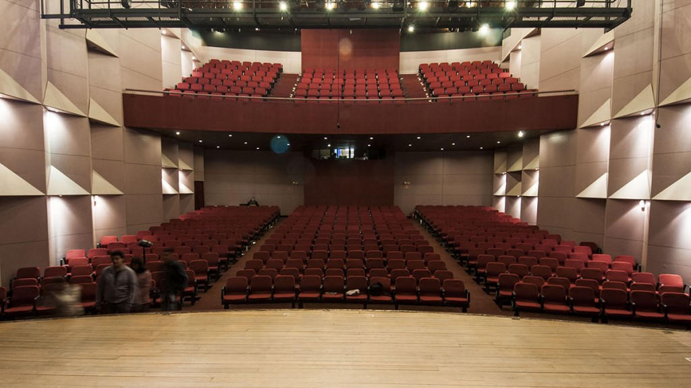
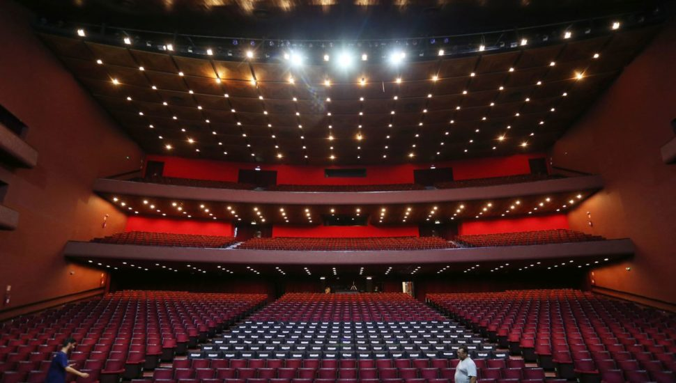
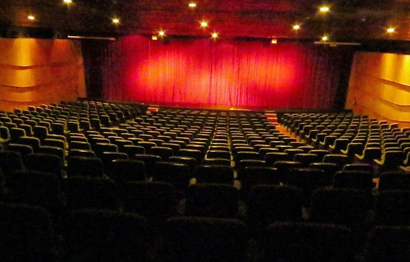
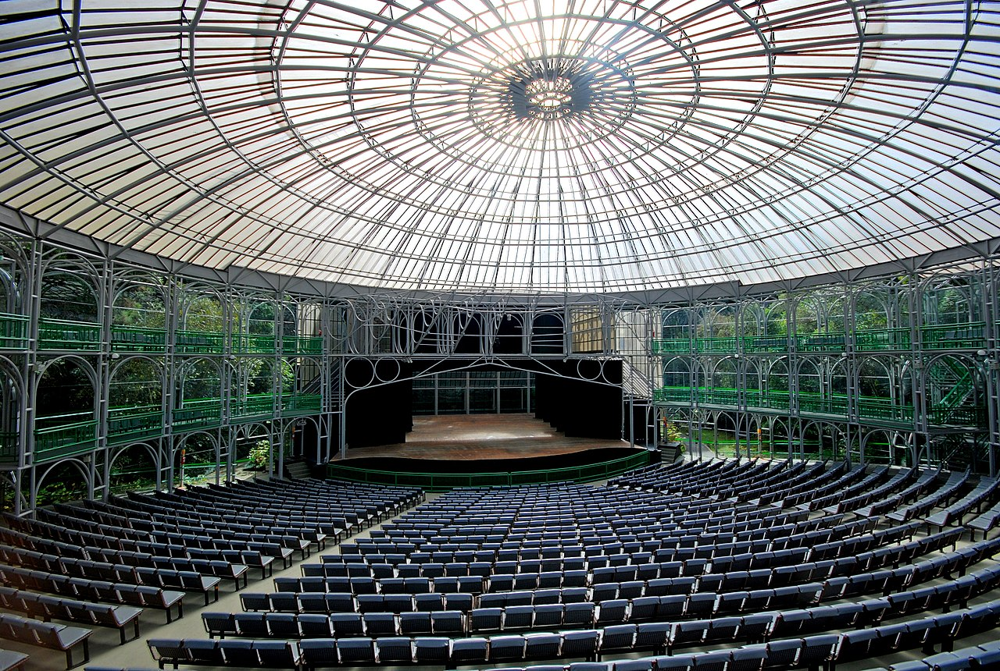

Teatros Curitiba
TEATRO TUCA
 O TUCA (Teatro da PUCPR) está localizado na Rua Imaculada Conceição, 1155, Prado Velho,no térreo do bloco azul. Possui capacidade para até 640 pessoas e recebe diversos eventos, como seminários, palestras, apresentações musicais, teatrais e colações de grau. O e-mail para contato é auditorios@pucpr.br e o telefone 41-3271-1604.
TEATRO GUAÍRA
 teatro guaira Marco do modernismo paranaense, o Centro Cultural Teatro Guaíra é um dos maiores complexos culturais da América Latina, com 16,9 mil metros quadrados e capacidade para 2,8 mil pessoas. Mantido pelo Governo do Paraná, está sediado na praça Santos Andrade.
TEATRO UNIVERSIDADE POSITIVO
 O teatro da Universidade Positivo foi fundado em 2008 e é considerado o maior teatro
do Paraná e um dos mais bem equipados do Brasil. Com sua grande estrutura, cujo projeto arquitetônico foi inspirado no teatro grego Epidaurus, do século IV a.C, consegue suportar até 2400 pessoas sendo um belo atrativo para grandes shows.
O teatro da Universidade Positivo foi fundado em 2008 e é considerado o maior teatro
do Paraná e um dos mais bem equipados do Brasil. Com sua grande estrutura, cujo projeto arquitetônico foi inspirado no teatro grego Epidaurus, do século IV a.C, consegue suportar até 2400 pessoas sendo um belo atrativo para grandes shows.
TEATRO MONTENEGRO
 O Teatro Fernanda Montenegro é outro centro popular das artes cênicas e conta com a capacidade de 551 pessoas. Ele foi inaugurado em setembro de 1993 e até os dias de hoje recebe artistas influentes, o teatro recebeu esse nome para fazer homenagem à grande atriz e escritora Fernanda Montenegro.
TEATRO ÓPERA DE ARAME
 Um dos símbolos mais marcantes de curitiba, a opera de arame, fundada em 1992, acolhe todo o tipo de espetáculo. Juntamente do teatro marcante, a paisagem que completa o espaço, entre lagos, vegetação e cascatas este espaço virou cenário de grandes eventos, sendo que ao ar livre pode abrigar mais de 20.000 pessoas.
Localização: R. João Gava, 920 - Abranches.Telefone: (41) 99244-6929